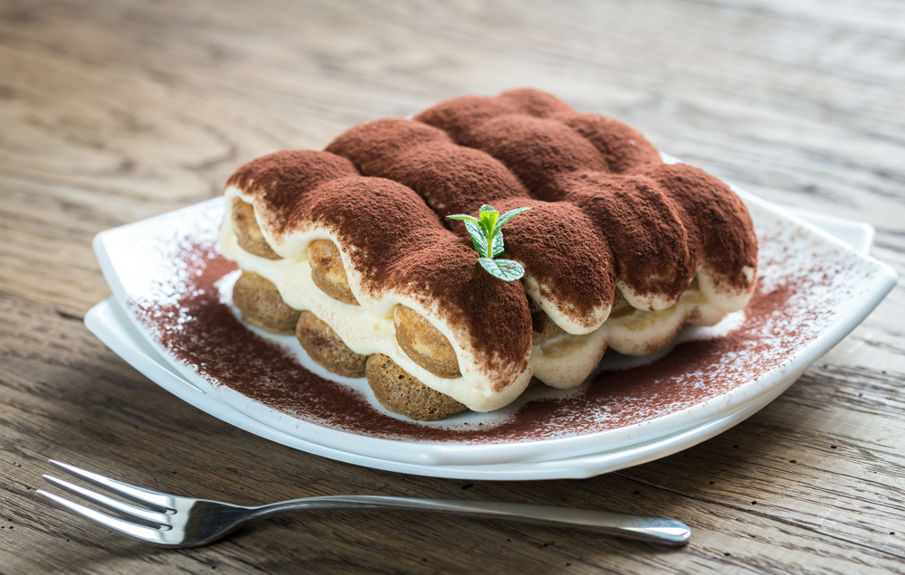

مواد لازم:
- زرده تخممرغ بزرگ: ۶ عدد
- شکر: ۱ پیمانه
- خامه غلیظ فرم گرفته: ۱و ¾ پیمانه
- پنیر ماسکارپونه: ۱ و نیم پیمانه (پنیر باید هم دمای محیط باشد)
- قهوه اسپرسو یا قهوه دم کرده غلیظ سرد: ۱و ½ پیمانه
- بیسکوییت لیدی فینگر یا همان بیسکوییت انگشتی: یک بسته
- وانیل: ۱/۲ قاشق چایخوری
- پودر کاکائو یا پودر نسکافه: ¼ پیمانه
طرز تهیه:
مرحله اول
برای درست کردن دسر ساده و خوشمزه تیرامیسو خامهای با بیسکویت پتی بور یا بیسکویت لیدی فینگر ابتدا زردههای تخممرغ را از سفیده کاملا جدا کنید و با شکر مخلوط کنید. ترکیب زرده تخممرغ و شکر و وانیل را آنقدر بزنید تا یک مایه غلیظ به دست بیاید. برای اینکه به راحتی بتوانید تخممرغ را بزنید و شل و وارفته هم نشوند، زردهها را در یک قابلمه بریزید و به راحتی آنها را هم بزنید. برای گرفتن نتیجه جالب تر بهتر است در یک قابلمه آب را جوش بیاورید و ترکیب شکر و تخممرغ و وانیل را به روش بنماری به مدت ده دقیقه روی بخار آب هم بزنید.به این ترتیب هم رنگ این ترکیب خیلی خوشرنگ و لیمویی میشود و هم ترکیب شما غلیظتر و قوام یافتهتر میشود.
مرحله دوم
یادتان باشد برای تهیه تیرامیسو یا هر شیرینی و دسر دیگری از مواد لبنی تازه استفاده کنید تا طعم دسر و شیرینی لذیذتر و مطبوعتر شود. حالا به ترکیب تخممرغ و شکر، پنیر ماساکارپونه را اضافه کنید و با حوصله آن را هم بزنید، آنقدر که یک مایه یکدست و صاف و نرم به دست بیاید. بهتر است پنیر ماسکارپونه با دمای محیط هم دما شود، به این ترتیب هم زدن و یکدست شدن آن راحتتر صورت میگیرد.
مرحله سوم
همان طور که در قست فوت و فن ها گفتیم یادتان باشد برای هم زدن خامه فرمگرفته و غلیظ خیلی آهسته عمل کنید. حدود ده دقیقه برای زدن خامه باید زمان بگذارید و با حوصله این کار را انجام دهید در این صورت بدون اینکه خامه تغییر شکل و فرم دهد و ژلاتینی شود میتوانید حتی تا چند روز آن را در یخچال نگهداری کنید. برای درست کردن «تیرامیسو» ما به خامه وانیل و شکر اضافه نمیکنیم چون خامه یکی از مواد پایه دسر تیرامیسو است اما اگر قصد دارید از خامه سنگین برای تزیین شیرینی و دسر استفاده کنید حتما کمی شکر و وانیل به آن اضافه کنید.
در این مرحله خامه زده شده را به ترکیب زرده تخممرغ، پنیر ماسکار پونه و شکر اضافه کنید و باز هم به آرامی و با حوصله این ترکیب را هم بزنید تا تمام مواد با هم کاملا مخلوط شوند. بهتر است برای هم زدن خامه و تخممرغ و پنیر و شکر با هم از یک قاشق بزرگ استفاده کنید. در نهایت باید یا از بین رفتن هوای میان ذرات بافت خامه، باید یک مایه یکدست و نرم و لطیف و بدون پستی و بلندی داشته باشید.
مرحله چهارم
در این مرحله قهوه اسپرسو یا قهوه دم کرده غلیظ را در یک کاسه بریزید و بیسکوییتهای پتی بور یا لیدی فینگر یا همان بیسکوییت انگشتی خودمان را به سرعت به قهوه آغشته کنید. مراقب باشید بیشتر از یک ثانیه این کار طول نکشد چون بیسکوییتها، قهوه را به خود جذب میکنند و خمیر میشوند یا از هم وا میروند. برای بیسکویت پتی بور بهتر است از یک قلم مو برای مالیدن قهوه روی بیسکویت استفاده کنید چون پتی بور نازک است. حالا بیسکوییتهای پتی بور یا انگشتی آغشته به قهوه را در کف ظرفی مثل سینی یا دیس یا هر ظرفی که میپسندید، بچینید.
مرحله پنجم
روی بیسکوییتهای پتی بور یا لیدی فینگر چیده شده در ظرف را با یک لایه از کرم تیرامیسو بپوشانید و یک لایه دیگر بیسکوییت روی کرم تیرامیسو بچینید. روی این بیسکوییتها یک لایه دیگر کرم بمالید. در نهایت باید دو لایه کرم و بیسکوییت داشته باشیم، روی لایه آخر پودر کاکائو یا پودر نسکافه بپاشید، با هر میوه یا افزدونی دیگری که میپسندید تزیین کنید و به مدت ۶ ساعت در یخچال نگه دارید تا دسر خودش را بگیرد. بهتر است طوری برنامهریزی کنید که تیرامیسو شب تا صبح در یخچال بماند.
بعد از این مدت کیک تیرامیسو یا دسر تیرامیسو را به قطعات دلخواه با چاقوی تیز برش بزنید. میتوانید از همان ابتدا هم تیرامیسو را در ظرفهایی که میخواهید سرو کنید،تهیه کنید؛ به این ترتیب که لایه بیسکوییت و کرم را در از همان ابتدا در ظرفهای پذیرایی بچینید و در یخچال بگذارید. تیرامیسو خامهای با پتی بور یا لیدی فینگر را به مدت یک هفته میتوانید در یخچال نگهداری کنید. تیرامیسو را به همین ترتیب به صورت قالبی و لیوانی و تک نفر هم میتوانید درست کنید. اگر هم تخم مرغ را در تیرامیسو نمیپسندید آن را بدون تخم مرغ تهیه کنید.
